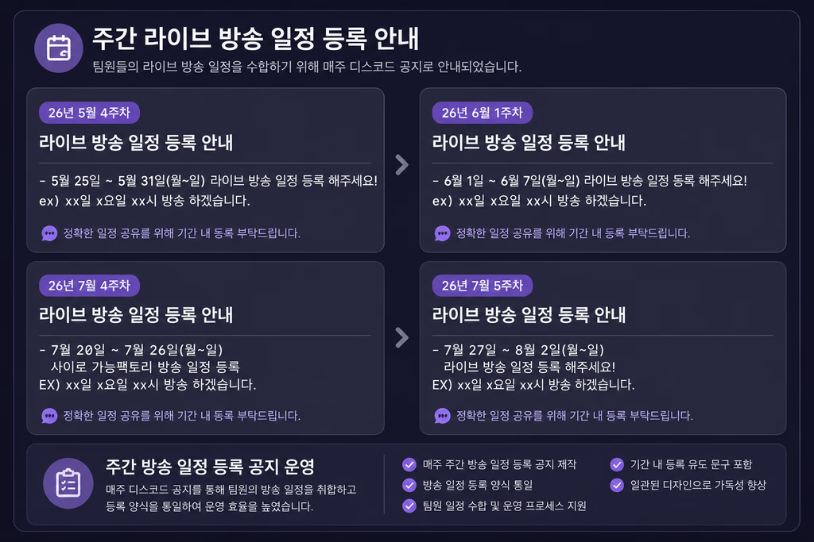
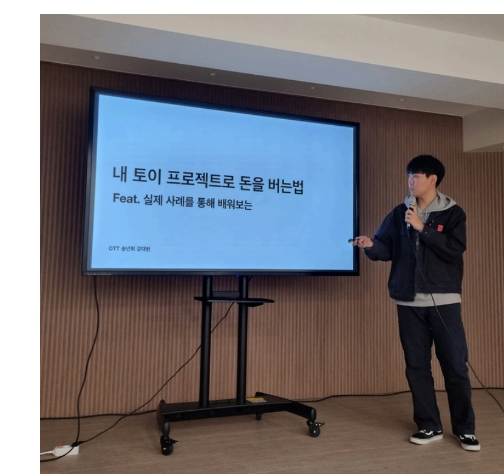
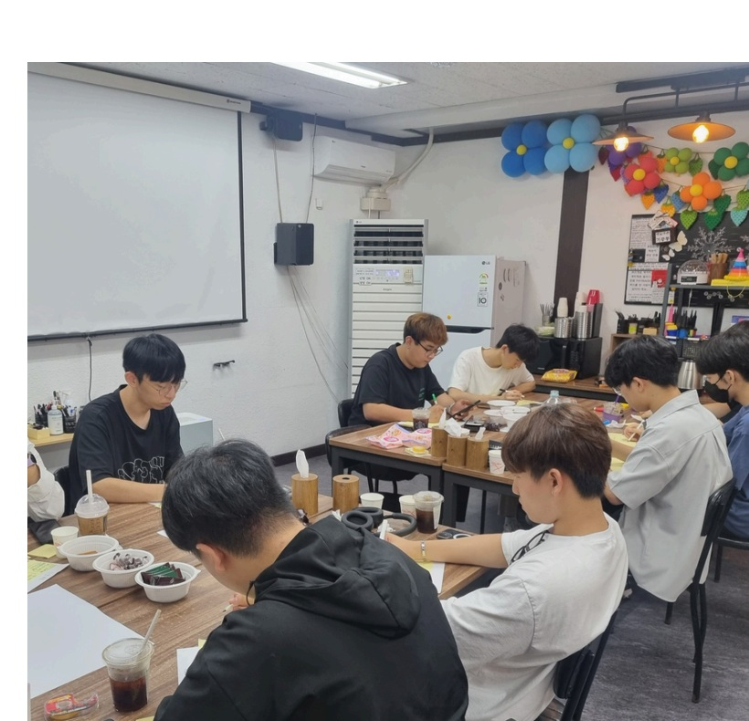
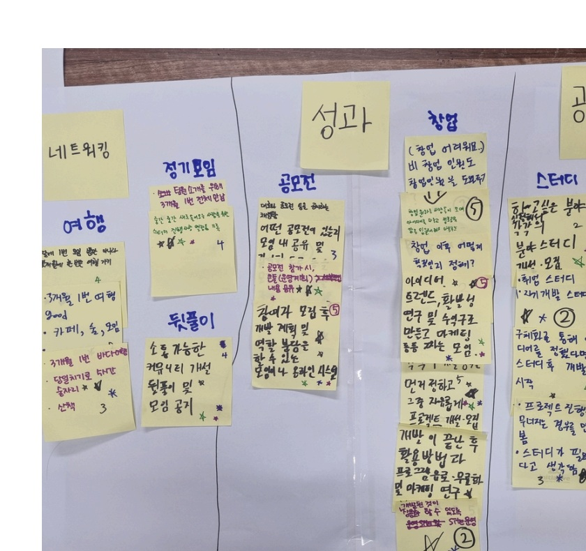
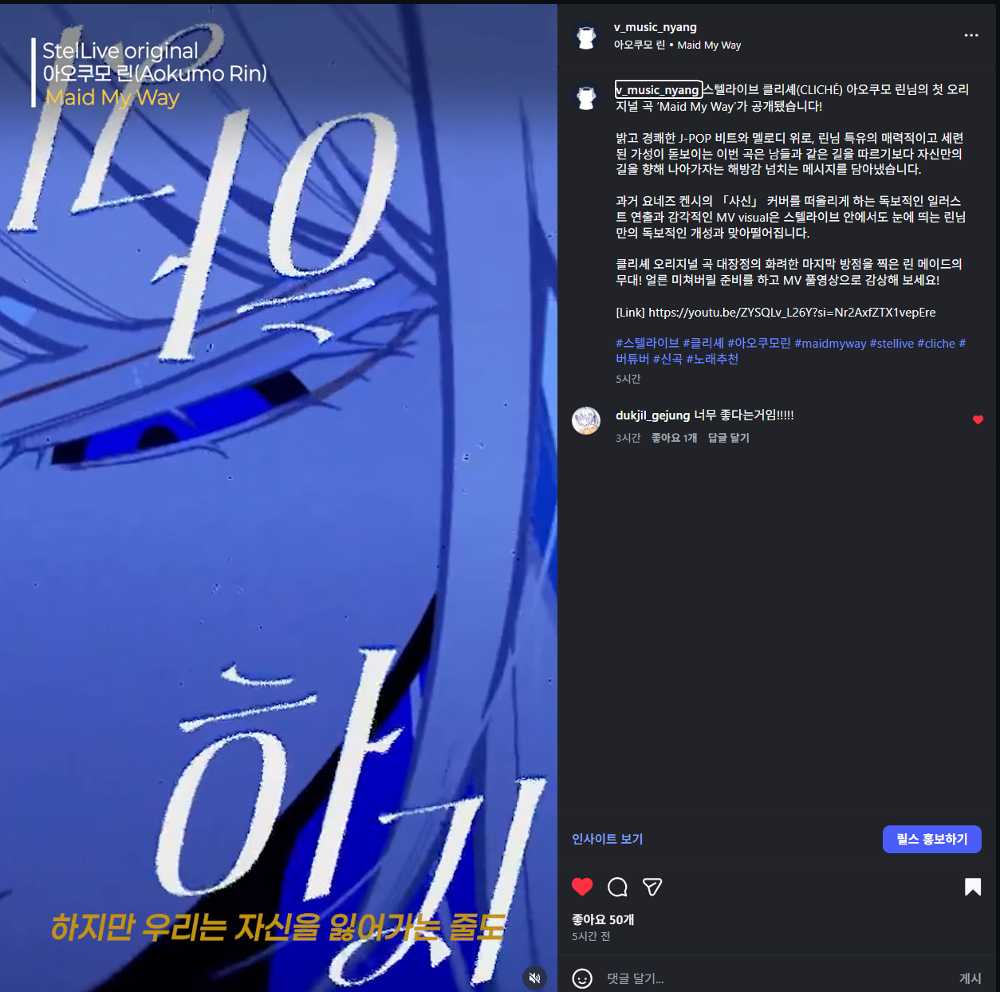
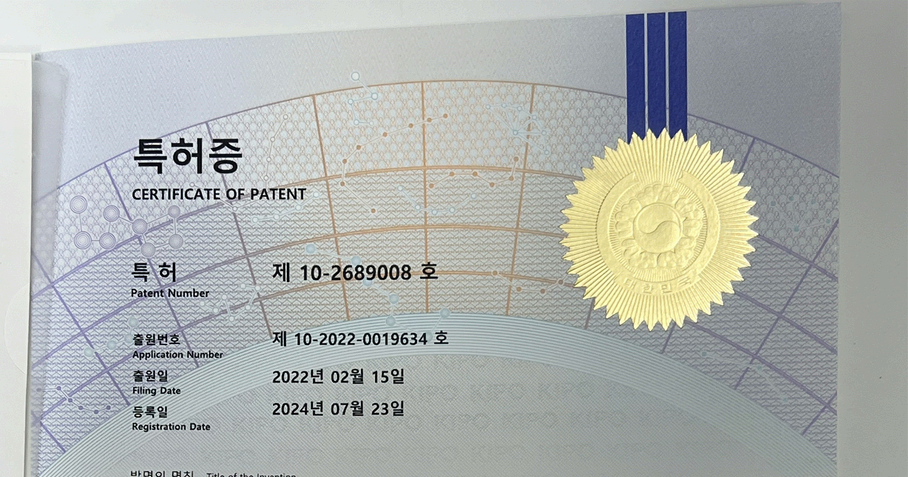

포트폴리오 · 2026
크리에이터의 활동을
연결하는 매니저 지원자
방송과 외부 일정을 정확하게 정리하고, 콘텐츠가 만들어지는 과정을 이해합니다.
크리에이터와 제작진 사이에서 필요한 내용을 확인하고 빠르게 공유합니다.
일정 관리콘텐츠 운영 지원커뮤니티 운영제작 소통현장 대응
소개
정확한 기록과 자연스러운 소통으로크리에이터의 활동이 이어지도록 돕습니다.
활용 도구Google SheetsExcelNotionDiscordPhotoshopPremiere ProBlenderUnreal Engine
매니지먼트 경험
일정과 구성원을 연결하며
활동의 흐름을 정리했습니다.
팀 방송 일정 지원
팀원들이 각자의 방송 준비에 집중할 수 있도록 주간 일정을 취합해 내부에 공유했습니다. 일정이 추가되거나 바뀌면 기존 공지와 비교해 수정하고, 누락된 내용이 없는지 다시 확인했습니다.
담당 범위일정 안내 · 취합 · 내부 공유
활용 채널Discord 팀 내부 공지
- 01등록 안내
- 02일정 취합
- 03내부 공유
- 04변경 확인
실제 수행 범위인 일정 안내·취합·내부 공유를 중심으로 정리했습니다. 라이브 모니터링은 시간이 가능한 경우 방송 흐름을 확인하는 수준으로 참여했습니다.

커뮤니티 운영 경험을 이어
백공당 재설립을 준비합니다.
특성화고 IT 커뮤니티 OTT에서 마케팅 담당으로 활동하며 모임 홍보와 현장 운영에 참여했습니다. 현재는 부회장으로서 기존 활동을 정리하고, 운영 목적과 회원 체계를 보완해 백공당(BGD)으로 재설립하는 초기 운영에 참여하고 있습니다.
기존 OTT 운영홍보 · 세미나 · 네트워킹 지원
→
백공당 재설립 준비회원 체계 · 운영 조직 · 채널 정비
회원 체계·운영 조직 정리홈페이지·Discord·카카오톡 역할 구분신규 회원 모집·출범 행사 준비활동 기록·공식 문서 관리



관람객 안내·현장 흐름 지원
광주월드컵경기장과 기아챔피언스필드의 단기 행사 운영에 참여했습니다. 관람객의 입장 과정이 원활하게 이어지도록 안내하고, 현장에서 확인이 필요한 상황은 담당자에게 전달했습니다.
입장 안내·티켓 검표반입 제한 물품 확인현장 질서·안전 관리1종 보통운전면허 보유
콘텐츠·제작 경험
아이디어가 결과물이 되는 과정을
직접 경험했습니다.
버추얼 뮤직비디오 연출 보조·배경 제작
팀 프로젝트에서 연출 보조와 배경·프랍 제작을 맡았습니다. 장면별 제작 목록과 일정을 정리하고, 회의에서 나온 피드백과 수정사항을 Notion에 기록해 팀원들과 공유했습니다.
연출 보조스토리·장면 구성 의견 정리
제작배경 에셋·프랍 모델링과 배치
진행 관리일정·제작 단계·수정 이력 기록


제작 흐름 이해
Stage100 기반 가상 환경 구축, 카메라 설정, 라이팅과 실시간 무대 연출을 실습하며 버추얼 콘텐츠가 화면에 구현되는 과정을 배웠습니다.
버추얼 콘텐츠 제작 기술 이해
크리에이터와 제작진의 요청을 더 정확히 이해하기 위해 3D 제작부터 가상무대, AI 콘텐츠와 팬덤 기획까지 버추얼 콘텐츠의 전반적인 제작 과정을 학습했습니다.
버추얼 음악·굿즈 정보 콘텐츠
공식 영상과 공지에서 핵심 정보를 확인한 뒤 짧은 영상과 카드뉴스로 재구성했습니다. 처음 보는 사람도 내용을 빠르게 이해하고 원본 콘텐츠까지 이어서 볼 수 있도록 정보의 순서와 화면 구성을 정했습니다.
음악 콘텐츠하이라이트 구간 선정 · 자막 · 캡션
굿즈 콘텐츠옵션 · 구성 · 가격 정보 구조화


알레르기 알림 시스템
급식 알레르기 정보를 직관적으로 확인할 수 있도록 발신 장치, 수신 장치, 서버를 연동한 시스템을 기획하고 시제품을 제작했습니다.
- 사용자와 영양사의 피드백 반영
- 과학기술정보통신부장관상 수상
- 특허 제10-2689008호 등록

실무 경험
작은 변화도 확인하고
다음 업무가 이어지도록 정리했습니다.
웨이퍼 시료 제작·불량 분석
작은 오차도 결과에 영향을 주는 환경에서 작업 순서와 설비 조건을 확인하고 분석 결과를 보고했습니다.
- 시료와 설비 상태 확인 후 정해진 순서에 따라 분석
- 이상 발생 시 준비 과정과 설정값 점검
- 분석 결과·특이사항 기록 및 교대 인수인계
환경안전관리 업무 지원
여러 부서에서 전달된 자료를 일정한 형식으로 정리하고 누락된 내용은 다시 안내했습니다.
- 건강 이상 소견·검사 결과 취합과 보고
- 부서별 제출 현황과 누락 항목 확인
- 환경안전·방역 관리 및 문서 정리 지원